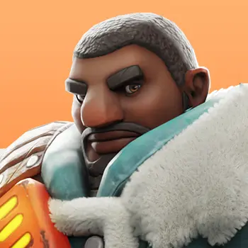
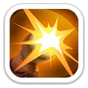
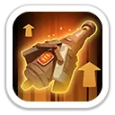
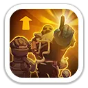
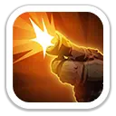
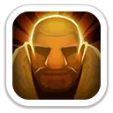
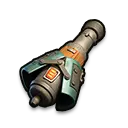
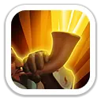

Разрушитель
Заряжает артиллерию мощным снарядом и наносит большой урон по области.
300% / 330% / 360% / 390% / 420% атаки

AoE-урон · атакующий сбор · универсальные усиления войск
Бредли — один из самых выгодных героев 7 поколения. Он доступен через Колесо удачи, наносит мощный урон по области и усиливает весь марш сразу тремя навыками Экспедиции. Особенно хорош в атакующих сборах, на Свирепом медведе, в PvP и на Арене.
Максимальные значения героя 7 поколения.
На Арене Бредли играет роль дальнего AoE-бойца и особенно опасен, когда противники стоят плотной группой.
Заряжает артиллерию мощным снарядом и наносит большой урон по области.
300% / 330% / 360% / 390% / 420% атаки

Наносит урон по области и оставляет пылающую воронку на 2 секунды. Она наносит дополнительный урон каждые 0.5 секунды.
Удар 60/66/72/78/84% · горение 17/19/21/23/25%

Пассивно повышает собственную атаку Бредли.
+10% / +14% / +18% / +22% / +26%
Именно этот набор делает Бредли одним из лучших стрелков поколения для больших боёв.

Постоянно повышает атаку всех дружественных войск.
+5% / +10% / +15% / +20% / +25%

Увеличивает урон всех войск против вражеских копейщиков и пехоты. Бонус относится к типу цели, а не к типу ваших войск.
По копейщикам +6/12/18/24/30% · по пехоте +5/10/15/20/25%

Каждые 4 хода на 2 хода повышает наносимый всеми войсками урон.
+6% / +12% / +18% / +24% / +30%

Максимальные характеристики: +1 752 атаки героя · +1 444 защиты · +10 833 здоровья · +160.50% смертоносности · +160.50% здоровья войск.

Отлично. «Мощь ветерана» и «Тактическая поддержка» усиливают общий урон. «Мощный выстрел» против Медведя не даёт классового бонуса.
Одна из лучших ролей. Три навыка Экспедиции усиливают весь марш и хорошо масштабируются в больших боях.
Хорошо. Основной набор универсален, а «Знаток осады» дополнительно даёт до +15% атаки обороняющихся войск.
Очень хорошо. «Разрушитель» наносит 420% AoE-урона, а зажигательный снаряд оставляет опасную зону.
Бредли — один из самых важных героев 7 поколения для большинства игроков. Его стоит активно собирать через Колесо удачи. Для F2P он особенно ценен: заменяет старых стрелков, усиливает весь марш и остаётся полезным далеко за пределами своего поколения.